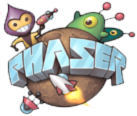
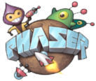

Catfish Studio Games - компания занимающаяся разработкой браузерных казуальных игр.
Основная технология разработки игр является HTML5 (API Canvas & WebGL)
В разработке используются популярные движки такие как PixiJS и Phaser


Бесплатный коллекционный карточный файтинг Street Fighter Cards. Игра в виде комиксов рассказывает историю Ryu и Ken сражающихся с Akuma. В игре присутствуют двадцать персонажей среди которых Ryu, Ken, Chun Li, Alex, Akuma, Ibuki и многие другие. Простая и увлекательная игра с интересными персонажами и увлекательным сюжетом.

Match-3 файтинг с элементами RPG. Игра создана по мотивам вселенной "Звёздные воины". Вам даётся выбор встать на сторону света, выбрав Люк Скайуокера или на сторону тьмы, выбрав Дарт Вейдера. В игре вы встретите более 60 персонажей которые будут в вашей команде, и побываете на 15 ключевых планетах.
Match-3 файтинг с элементами RPG. Игра создана по мотивам серии видео игр "Смертельная битва" некогда завоевавшая сердца всех любителей жанра файтинга, и сейчас предстаёт перед вами в новом свете в виде казуальной игры в стиле "три в ряд" с элементами RPG.

Настольные игры в кости. "Тысяча" - популярная игра в кости где вы играете против трёх соперников и ваша цель набрать как можно быстрее тысячу очков.
"Семёрка" - популярная игра в кости где вам необходимо раcсчитывать каждый шаг чтобы опустошить игровое поле.
E-mail: somov@i.ua
Телефон: 066-934-72-58
E-mail: catfish.studio.lg.ua@gmail.com
г. Луганск

 
